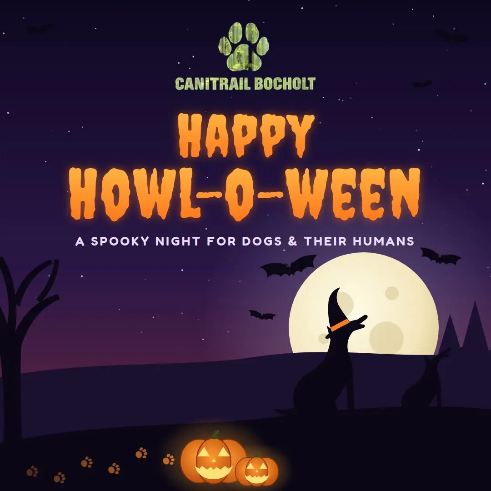
31 oktober
Howl-o-ween Canitrail Bocholt, walk & run
Een spookachtige avond voor honden en hun baasjes.
- Zaterdag 31 oktober 2026 om 17:30
- Eikenlaan 8, Bocholt
Social runs met je hond
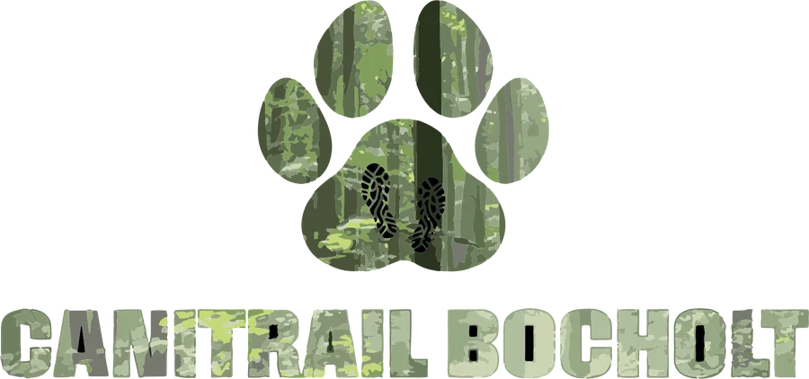
Samen uit, samen thuis. Hardlopen in de natuur, in het tempo van mens en hond.
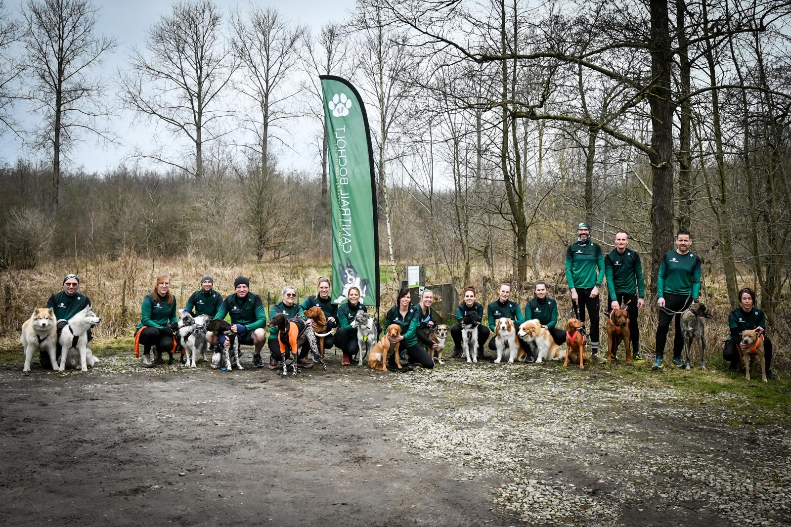
Over ons
Canitrail is een sport voor mens en hond waarbij samen beleven en genieten van het hardlopen in de natuur centraal staat.
Wij hanteren het principe van "Social Runs": geen "moetjes", samen uit, samen thuis.
Snelheid is van ondergeschikt belang. Het plezier van de run met je hond staat voorop.
Tijdens een run worden er meerdere lusjes aangeboden, zodat je zelf bepaalt hoe ver je loopt.
Agenda
Een overzicht van aankomende en voorbije evenementen. De knop "Meer info" brengt je naar de Facebookgroep, waar je je ook kan aanmelden.

Een spookachtige avond voor honden en hun baasjes.
We vieren de dag van arbeid met een social run in Achel. Verzamelen om 8:30 aan instapplaats 't Mulke, Molendijk 45, Hamont-Achel.
Meer infoOp de laatste zondag van het carnavalsverlof verzamelen we om 9u aan de Pollismolen, gelegen aan de Itterbeek te Opitter (Bree). Vanhieruit duiken we het Nationaal park Hoge Kempen in.
Meer infoStartplaats: parking tussen voetbal en ruiterhal, Eikenlaan 8, 3950 Bocholt.
Meer infoStartplaats: House of Nature parking, Speelpleinstraat z/n, Lommel.
Meer infoStartplaats: Zuid-Willemsvaart, Lozerweg, Weert (51.224451, 5.606739).
Meer infoWe trekken het bos in voor een nachttrail. Breng een (hoofd)lamp mee en voorzie je hond van een lichtje. Op 17 oktober kregen we een Jagersmaan te zien, de grootste supermaan van het jaar.
Meer infoIn natuurgebied Kempenbroek ligt het grensmoeras Het Smeetshof. We starten op de veldwegen rond de Smeetshoeve en door de eikendreef, met een lusje door nattere grond. Vertrek om 8u30 aan Natuurpunt, Smeetshofweg 1, Bocholt.
Meer infoResterheide is een natuurgebied van Bosland op de grens van Wijchmaal en Hechtel-Eksel. Er zijn verschillende uitgepijlde routes die we aan elkaar breien. Startplaats: Het Begijntje. Na de run zorgen we voor een hapje en een drankje.
Meer infoParkeer- en startplaats aan het kruispunt Kettingbrugweg en Belgebergstraat (vroegere "schuttekamer" op Google Maps). Twee lussen waarbij we terug langs het startpunt passeren.
Meer infoIn het Hobos te Pelt volgen we de bepijlde wandelroutes.
Meer infoOp zaterdag 18 mei de tweede canitrail in het mooie Lozen. Let op: er is een seizoensrally in Reppel.
Meer infoWe starten om 10u aan het clublokaal van hondenschool De Trouwe Vriend, Eikenlaan, 3950 Bocholt, voor een rondje door Reppel. We blijven in groep en zoeken een tempo dat voor iedereen aangenaam is. Samen uit, samen thuis. De honden blijven te allen tijde aangelijnd.
Meer infoFoto's
Veeg opzij om meer foto's te zien.
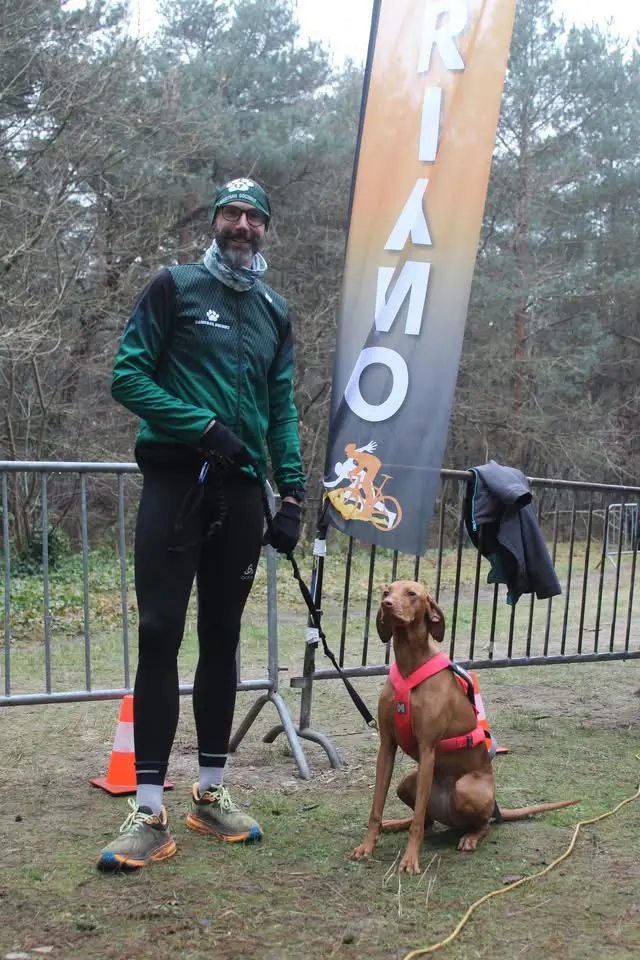
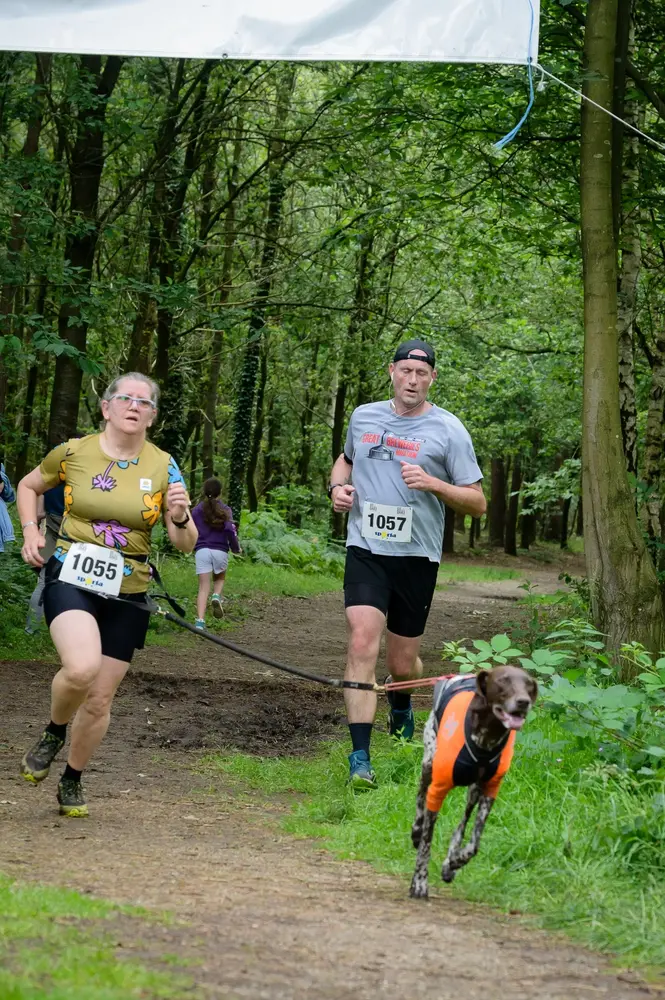
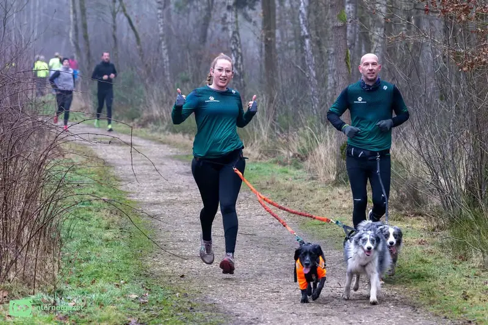
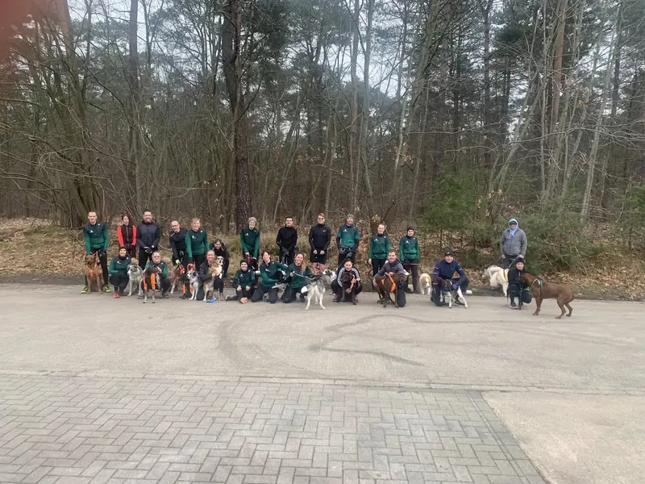
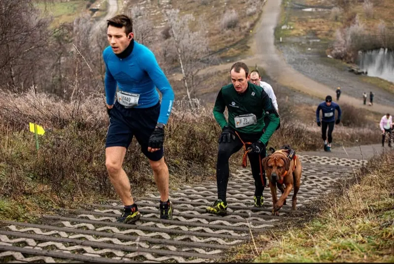
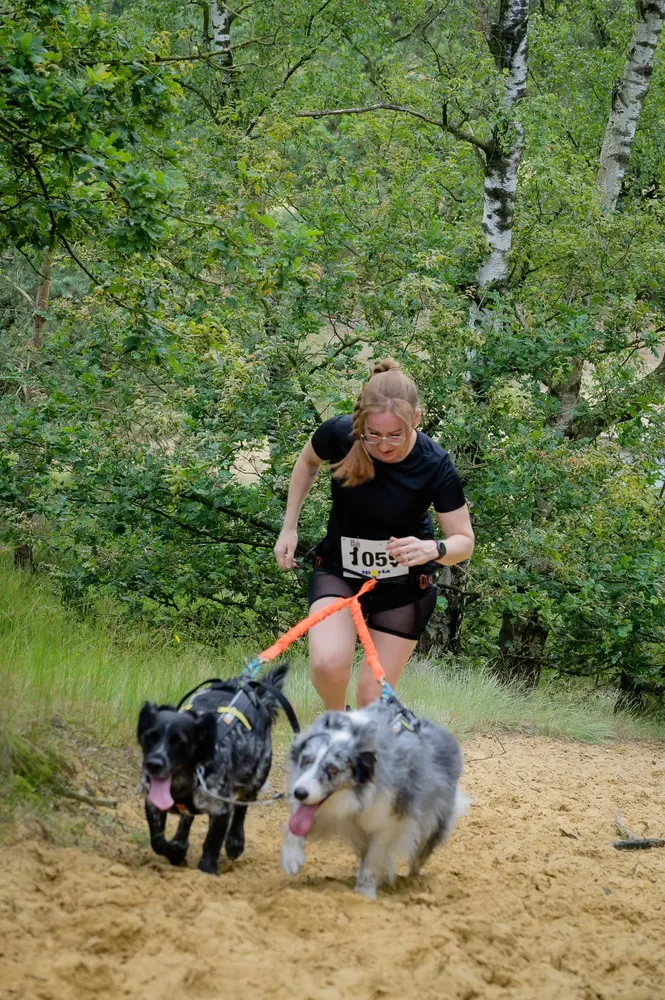
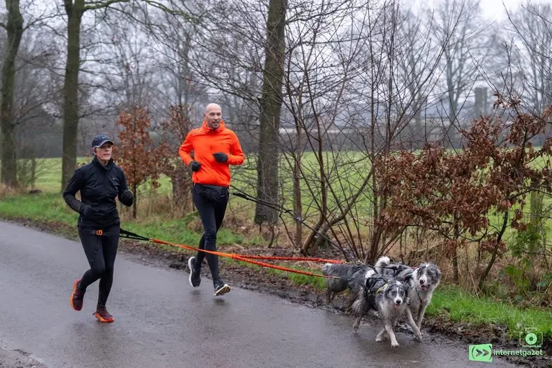
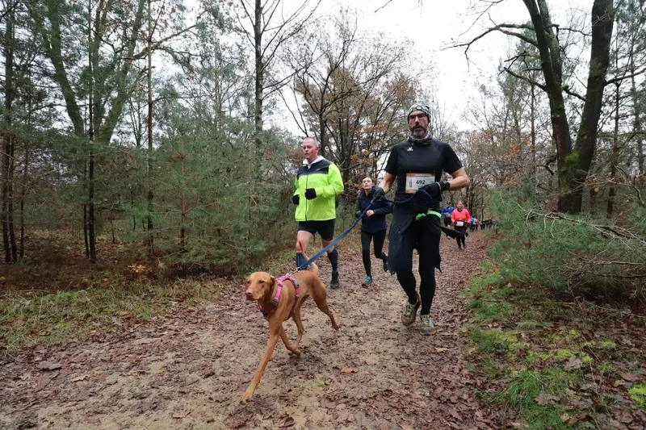
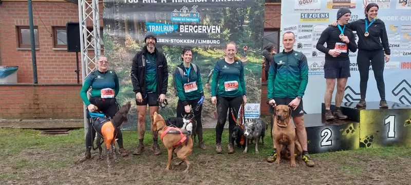
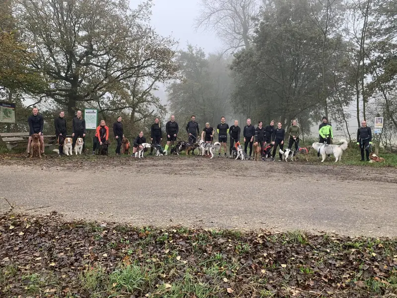
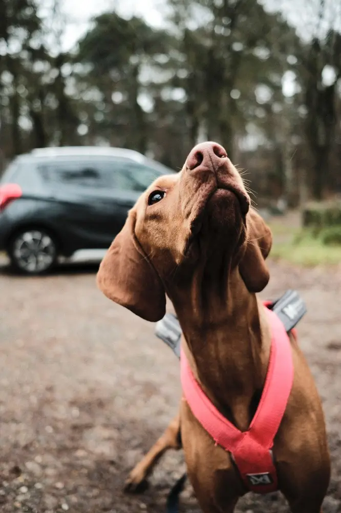
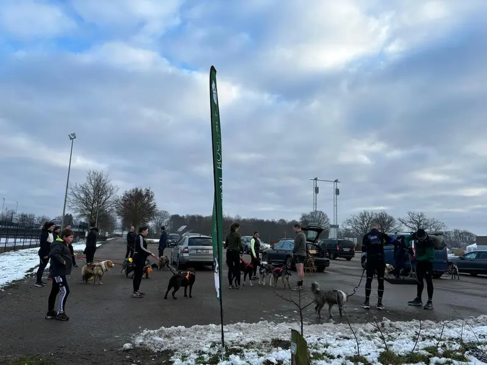
Contact
Voor vragen en informatie kan je contact opnemen via de sociale kanalen hieronder, of altijd een mailtje sturen.
canitrailbocholt@gmail.com